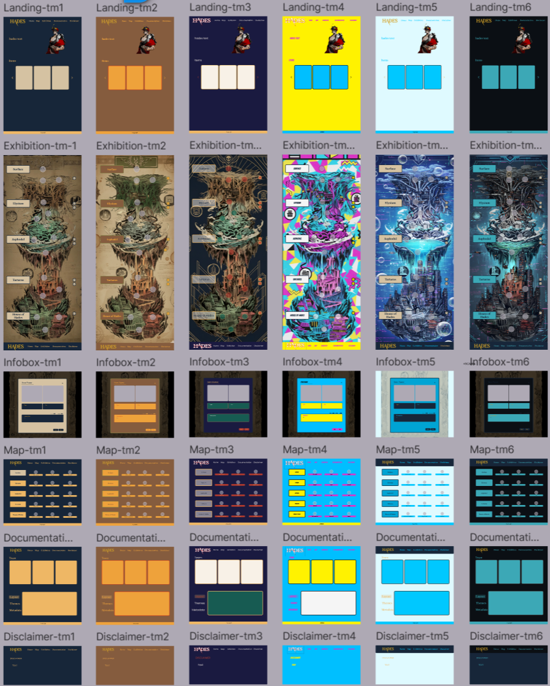

Meet the Team

Atakan Kayi

Ceyda Uyar
Yigit Ak
Atakan Kayi
Ceyda Uyar
Yigit Ak
Built the homepage as the thematic entry point to the museum. The layout prioritized atmosphere: time-fitting palette, groovy music, our hero welcoming you into the narrative. Right below is centered text blocks to invite user to start exploring. Margins were widened to create breathing space and keep the content from touching the viewport edges. Responsive typography scaling was added so the title remains dominant regardless of device size. The homepage needed to instantly communicate theme — and simplicity made that possible.
The exhibition page required a more technical layout solution. Unlike the map, this page needed to support many objects presented in repeatable format. Person2 designed a card-based system: image on the left, metadata on the right, expandable sections beneath. Flexbox was used instead of strict grid since it handles variable content better. Each card was assigned padding and maximum width constraints so images didn't stretch or pixelate at large resolutions. A challenge was balancing text volume — especially in historical & narrative descriptions — so collapsible toggles were implemented to prevent scrolling fatigue and keep the layout visually level between entries.
This page became the most content-dense section of the project, and the layout choices reflect that: structured, repeatable, reliable.
Handled the documentation page, meaning they had to present text-heavy content while keeping it readable and non-static. A two-column layout was chosen for desktop screens: text on one side, visual development materials on the other (sketches, notes, iterations). For mobile, the layout collapses into a stacked sequence to maintain legibility. The goal was transparency — to show how the project was built, not only the end result.
Also built the moodboard and set global style direction. We used Figma. The palette was inspired by Hades: charcoal #1a1a1a for the underworld, muted gold for accents, and a high-contrast serif font for titles to echo ancient inscriptional aesthetics. CSS variables were later introduced to unify these style decisions across contributors. This prevented color drift and ensured that page-level visuals felt cohesive even though multiple people worked separately. The stylization step effectively became the visual anchor for the entire project.
The map page was structured as the core navigation interface of the digital museum. Instead of relying on a standard menu, person1 created a spatial layout inspired by the branching rooms of Hades. CSS grid was used to define a multi-cell area where each exhibition room could be positioned visually rather than linearly. This approach gave full control over spacing and scale, allowing rooms to occupy varying grid spans depending on their importance or volume of displayed material. One design challenge was balancing grid density with readability — early tests left too much empty space — so the grid was expanded and room nodes scaled up to support clarity.
Room markers respond on hover, revealing the item associated with each exhibition area. The intention was to simulate walking through a real museum, where you don’t see everything at once — discovery happens through movement. The hover interaction helps guide users without overwhelming them visually.
The disclaimer page required a different tone: informational rather than exploratory. A minimal, single-column layout was chosen, with consistent margins and controlled line length to keep the legal text readable without distraction. Person1 avoided heavy styling here on purpose — the page acts as a frame, not a display — reinforcing that the project interprets history through digital media rather than replacing museum authority.
Each member was assigned two chronological aesthetic eras to observe how classical mythology has been interpreted through time. The goal was to map historical continuity: how myth objects change in meaning across centuries, eventually resurfacing in modern media like Hades.

Each team member wrote metadata entries for 5–6 artifacts, linking museum objects to in-game equivalents. The structure for every entry included:
Historical description → material, origin, symbolism.
Game narrative → how the item transforms inside Hades.
Four writing levels → simple to scholarly.
Bibliographic web references for both museum + game sources.
The format allowed the exhibition to communicate on multiple cognitive layers — children, casual readers, and scholars can extract meaning from the same artifact.
Each contributor developed their objects independently, then cross-reviewed tone and accuracy to keep consistency. Museum catalogues were prioritized over general internet sources to maintain academic reliability; game descriptions sourced strictly from official Hades wikis.